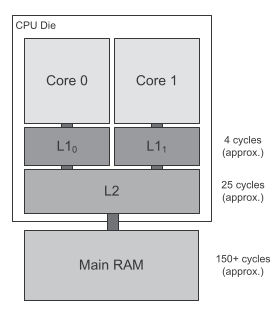
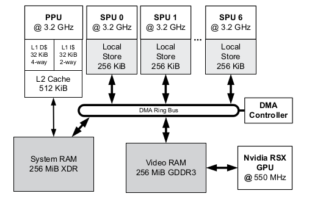

Suggests having functions return an enumeration to explicitly
define failure/success conditions
Exceptions
Powerful and clean; however add some overhead to the program
Suggestion to "Sandbox" your library (so the library doesn't have
to have exceptions enabled) by using the library in functions
that have exception handling enabled instead.
Another argument is that "exceptions are no better than gotos"
as they aren't easily viewable/tracable in code
RAII (Resource Acquisition is Initialization)
Use it!!!
Assertions
Assertions should be removed for production builds for performance
Possibility is to have your own define assertion like
#define DEBUG_BUILD#ifdef DEBUG_BUILD#define ASSERT(x) assert(x)#else#define ASSERT(x) // do nothing if production build#endif
static assert (C++11, however can write your own if not)
for if the data being checked is already known at compile time,
will cause the build to fail
Little and Big Endian
Little Endian: Least significant byte stored first (x86)
Big Endian: Most significant byte stored first (PowerPC)
IEC vs Metric size prefixes
kibi/mibi/etc (Ki,Mi,etc): powers of 2 (e.g. 1024)
kilo/mega/etc (K,M,etc): powers of 10 (e.g. 1000)
Executable file segments
Text segment: executable machine code for all program functions
Data segment: initialized global and static variables
BSS segment: Block Started by Symbol: uninitialized global/
static variables
Read only data segment: read-only (constant) global data, e.g.
PI = 3.14
Program memory types:
Program stack: stores local variables within functions
Heap: dynamically allocated memory (malloc/free)
Memory alignment
Apparently the PlayStation 2 would crash if trying to read
or write unaligned data
CPU Registers and buses
The collection of registers on a CPU is called a "register file"
The bus width defines the memory range the CPU can access, e.g.
a 16bit bus can access a range from 0x0000-0xFFFF
Virtual memory
Memory addresses are not directly mapped; instead they are
interpreted via a lookup table by the cpu (the look up
table is stored by the operating system)
Virtual memory is split into pages of a size of a power of 2,
typically 4KiB or 8KiB
memory reads and writes have two parts: the page index and offset
page index is looked up by the memory management unit (MMU) via a
page table. Page table is stored in RAM by the OS
Register-based instructions take between 1-10 cycles
RAM access can take ~500 cycles
Difference called the "memory gap"
Cache hierarchy
L1 cache: nearest to CPU; almost as fast as CPU register access
L2 cache: further away but more of it; often shared between cores
L3/L4 cache: further away again but more
Accessing memory already in cache is a "cache hit"; having to fetch
it from RAM is a "cache miss"
Cache line: a chunk of contiguous data moved into the cache; due to
the likelyhood that you will access memory near the initial point
soon and often (e.g. in a for loop or struct data)

Avoiding cache misses: the goal is to store data contiguously in as small
blocks as possible, then access them sequentially
Inline functions judiciously - small functions can provide a big performance
boost, but large functions can cause the code section to not fit within
the cache
PS4 architecture
Uniform Memory Access (UMA) - main RAM visible to all cores
8 cores in two clusters
each core has a private L1 cache
each cluster shares an L2 cache
PS3 architecture
Non-uniform Memory Acces (NUMA) - each core has its own dedicated
RAM called a "local store"
Main CPU called the Power Processing Unit (PPU)
8 SPUs (Synergistic Processing Units)
PPU accesses 256 MiB system RAM
Each SPU has a 256 KiB local store
2 SPUs reserved for OS and "fabrication flaws"

PS2 architecture
Emotion Engine (EE) CPU contains 16 KiB "scratchpad", which the programmer
can treat like regular RAM, and the CPU accesses without the use of the system
bus